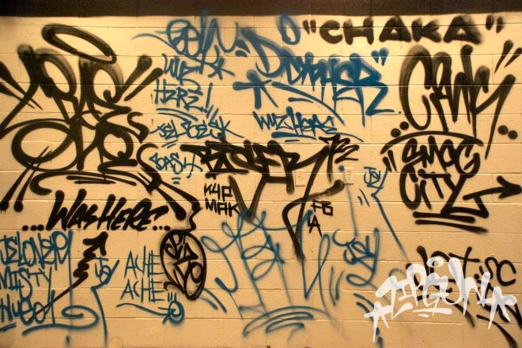
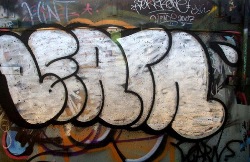
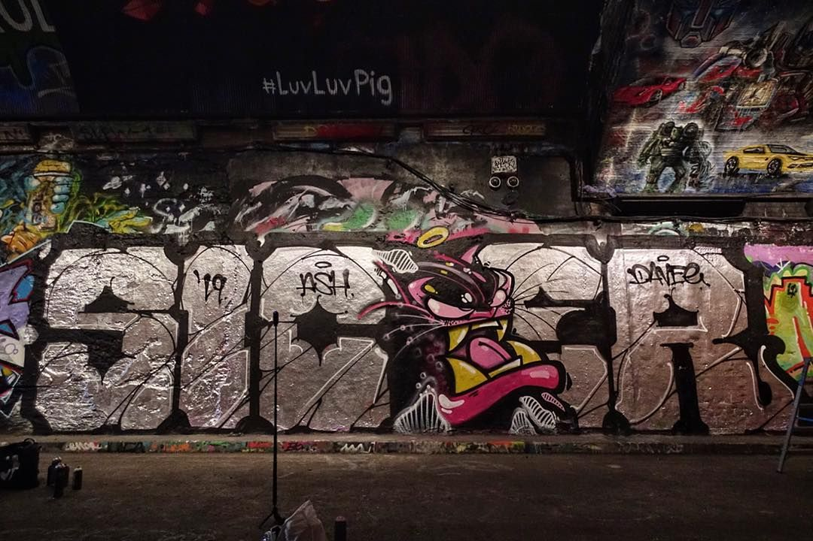
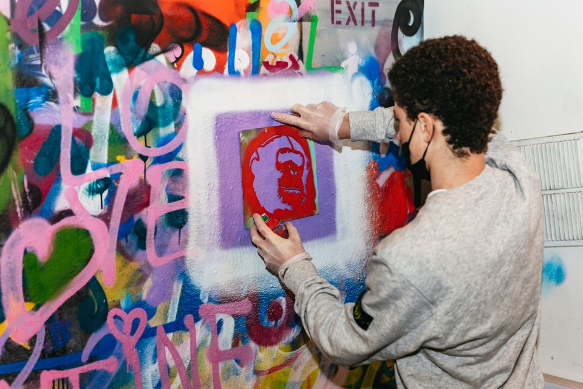
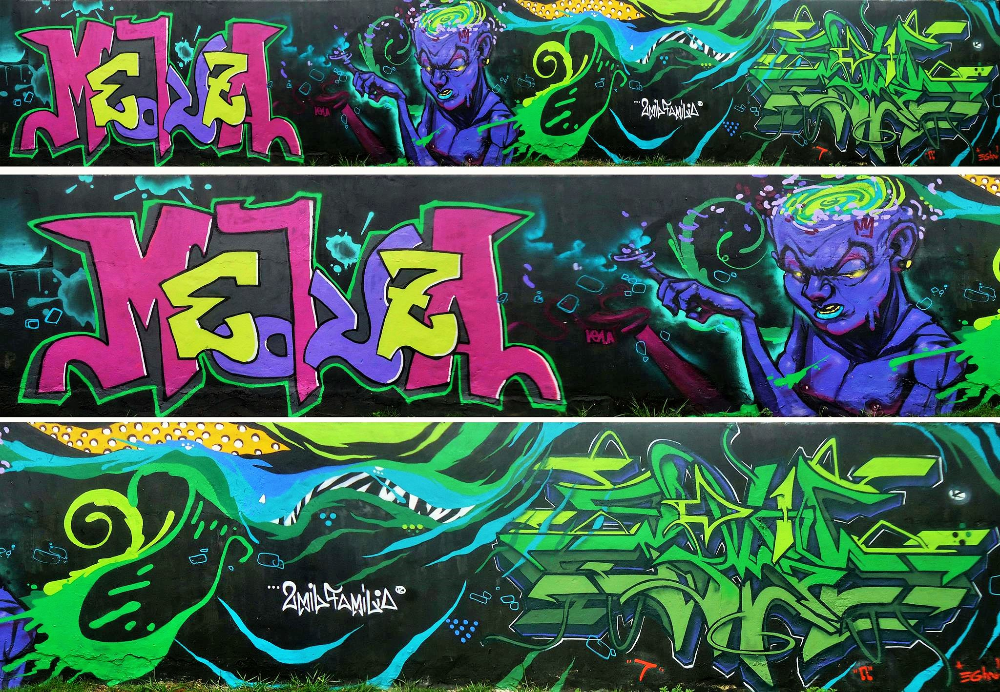
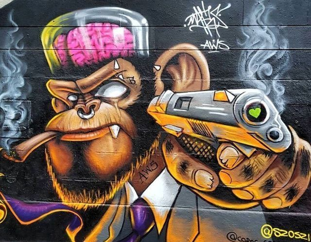

Tags
Is the easiest and simplest graffiti style there is. It only includes one color and are the most iconic stylised signature, usually the starting point of an artist. Taggers typically tag their name/nickname.
Throw up/Throwie
Are rounded letters with two colours. The letters are sprayed first and then the outline. This style avoids intricacy as they are designed too be thrown up as fast as possible.
Wildstyle

Are intricate but visually appealing. Consist of Interlocked letters and other decorative elements. They are usually difficult to dechiper by someone without graffiti knowledge.
Blockbuster
The letters are usually in a blok style. The goal is to cover a large space quickly, this is why the background is usually painted with paint rollers.
Stencil
Desired forms are cut out of paper and/or cardboard and then applied with spray paint or paint-rollers as such is easy to replicate images and put them up quickly.
Masterpiece
Also known as ‘piece’ is painted by freehand and uses at least tree colours. Its big and bold and can be as intricate or as simple as the artist wants it to be. Making a piece scored artist respect as standing in open places painting on walls is illegal and these were not quick and easy to make like most of the other styles.
Character
A character painted next to, around or inside a gaffiti. They are usually characterized humans,animals,spray cans and other existing/fantasy creatures or items